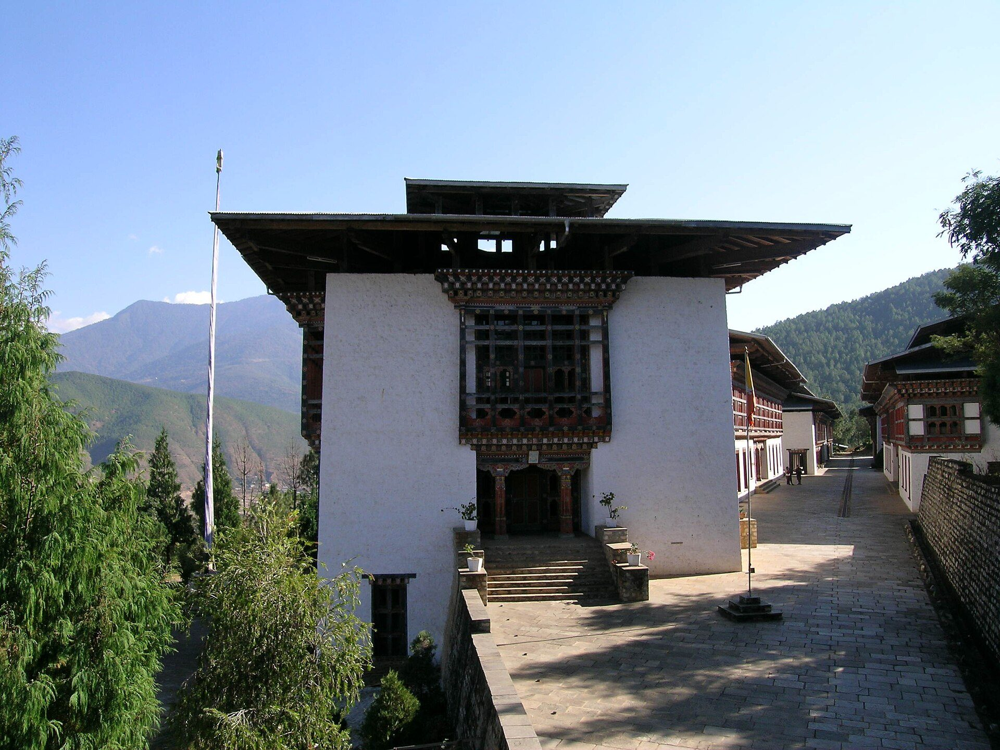
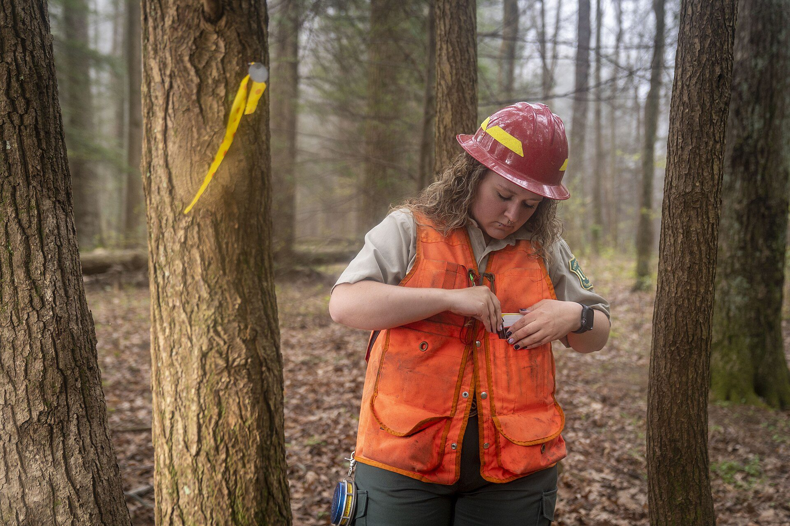
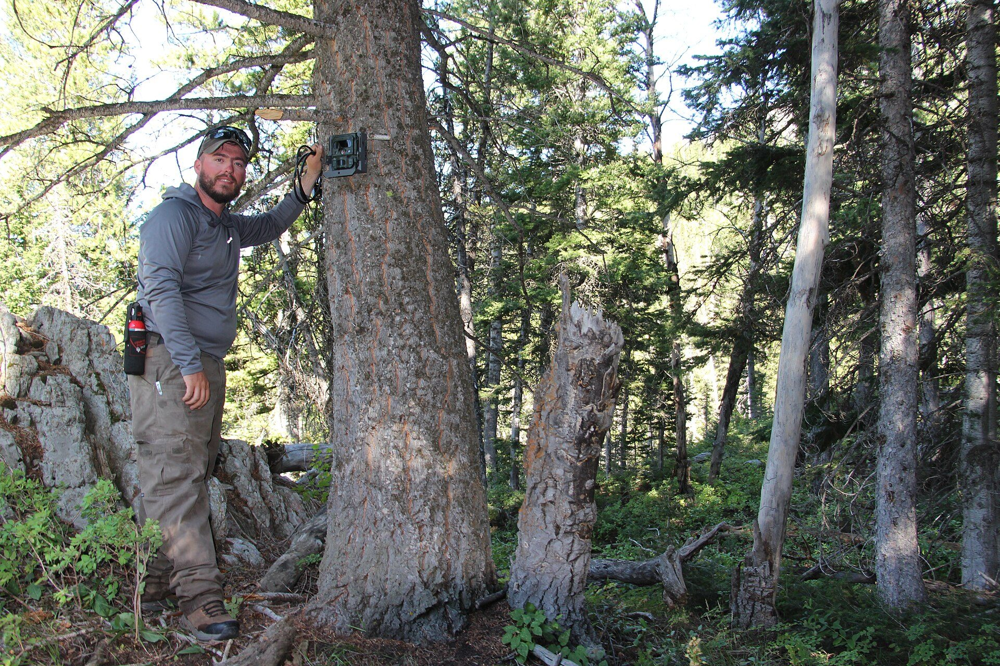
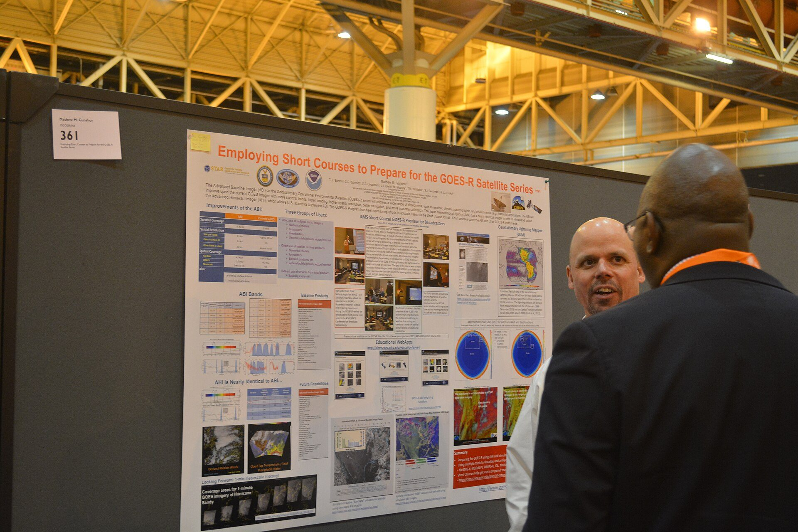
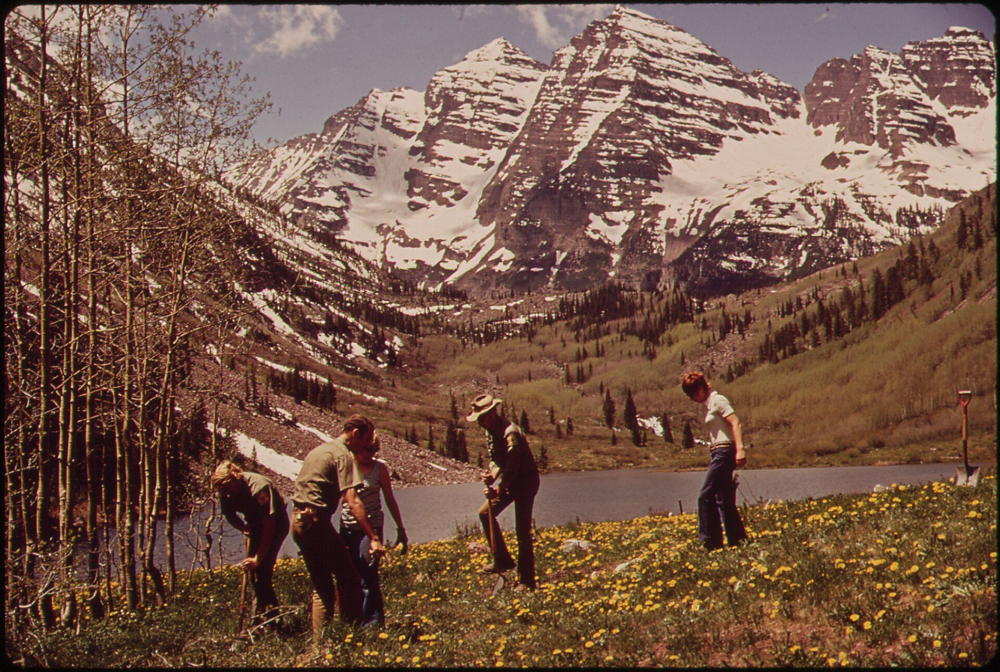
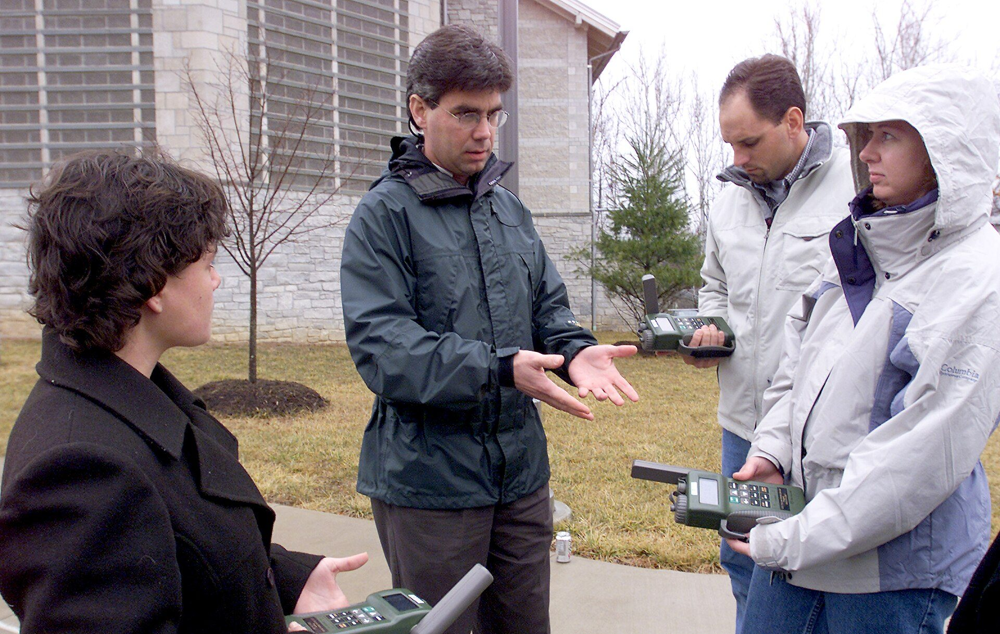
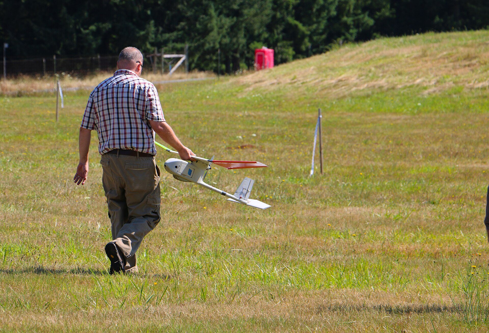
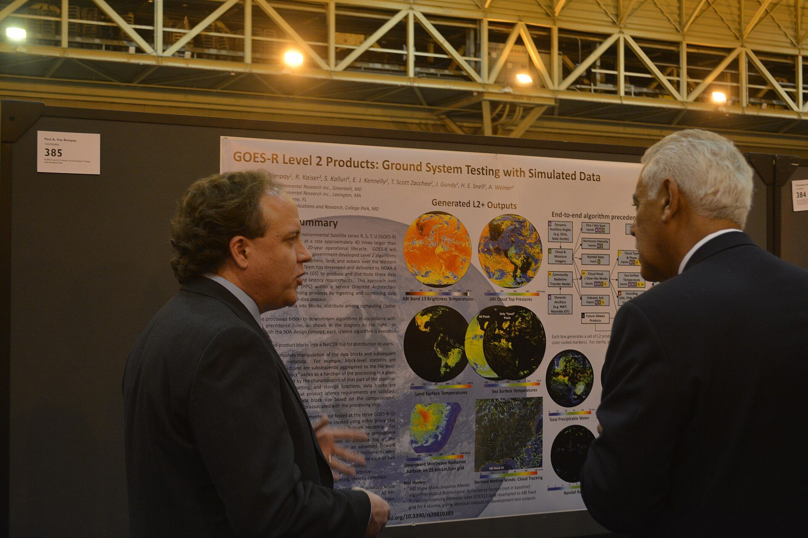
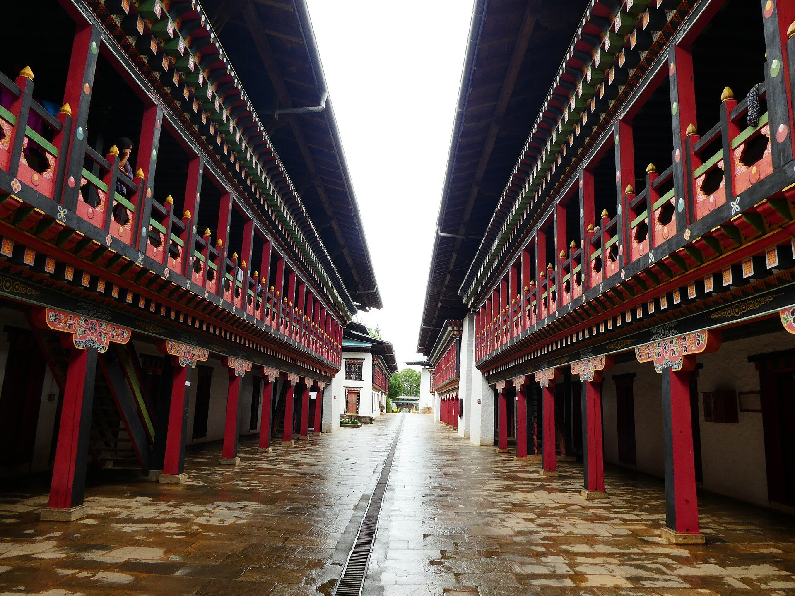
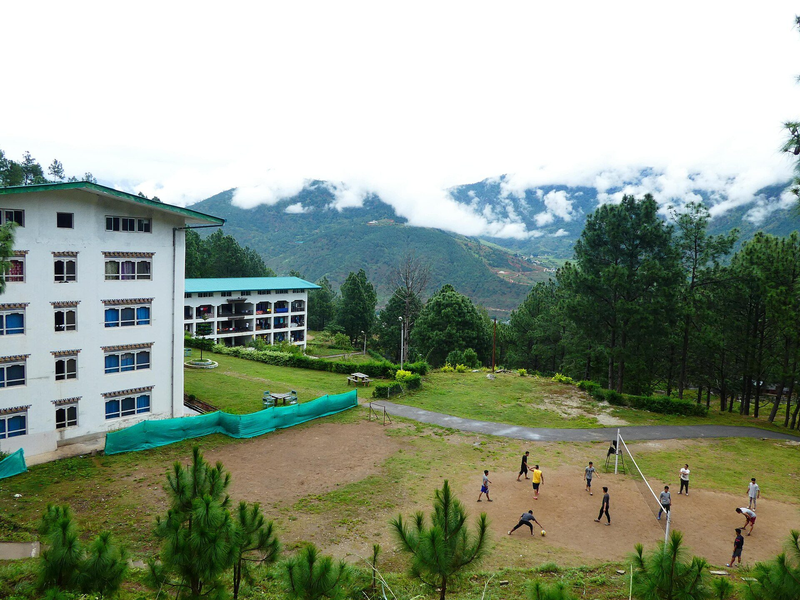

Scholarships · Funded research MSc · Assistantships · Conservation careers · Technical skills
Pathways, employers in Bhutan, emerging fields
Degree types, funding types, scholarships by region
Skills, supervisor emails, documents, statement of purpose
90-day plan, common mistakes, resource directory
Your forestry degree is a starting point, not a limit
Forestry and park services, protected areas, planning
Research projects, teaching, postgraduate study
Bhutanese and international conservation, climate and development organisations
GIS, climate, forest carbon and EIA work
Fellowships, start-ups, nature-based businesses

USDA Forest Service · Public domainMost graduates combine two of these routes, for example government service followed by a research degree. None of them is a dead end.
Pick the track first. The track tells you which degree, and which funding, to look for.
Divisions, territorial offices, protected areas and related agencies
Biodiversity programmes and environmental initiatives
Technical support, research projects, teaching assistance
EIA, GIS mapping, forest carbon and restoration contracts
Royal Society for Protection of Nature: conservation and environmental projects
Restoration, climate, research and environmental education
Community livelihoods, rural development and climate resilience
Conservation, public health and development programmes
Search for field / project assistant, GIS / data, community outreach and monitoring roles. In Year 2, explore student placements; in final year, apply against advertised criteria. Openings and experience requirements vary; civil-service posts follow RCSC rules.
Biodiversity monitoring, camera traps, occupancy
REDD+, carbon accounting, adaptation
Remote sensing, habitat and species modelling
Restoration ecology, sustainable forest management
Governance, livelihoods, community forestry

USFWS · Public domainWhich one do you already have coursework or thesis experience in?

NOAA Satellites · Public domainDegree types, funding types and where scholarships are
| Degree | What it involves | Typical funding | Best if you want… |
|---|---|---|---|
| Coursework MSc | Taught modules, short project | Varies widely; often scholarship or self-fund | Professional / specialist roles |
| Thesis MSc / MRes | Research-intensive thesis | May include RA or TA funding | A route to a PhD |
| MPhil | Research-oriented; structure differs by university | Varies by university | Deeper research before a PhD |
| PhD | Original research, 3–5+ years | Funded posts may be salaried or stipend-based | Research or academic career |
Coursework master's degrees are usually self-funded or scholarship-funded; thesis-based degrees are where RA and TA funding usually appears. Terminology differs between countries.
Competitive award with specified coverage
Project-funded research duties; benefits vary
Teaching duties with set compensation
University or external support
Net stipend · tuition · insurance · duration of support. An admission letter is not a funding letter.
Eligibility for Bhutanese citizens changes. Check each one on its official website for the 2027 cycle.
Check each programme's current funding status. Students typically study in two or more countries.
DAAD's EPOS courses typically require professional experience after the bachelor's. Chevening and Commonwealth depend on country lists, which change.
Check current Bhutan-specific eligibility
Research degrees; institution rules apply
Verify eligible countries and subjects
Embassy and university recommendation routes
Country-specific application instructions
Approved institutions and criteria
Supervisor support and research scholarships differ by university. Fulbright: verify whether a Bhutanese route exists.
Find labs working on your research question
Read funding guarantees, tuition and stipend terms
Contact supervisors where the programme asks
Apply after confirming admission requirements
In Canada, funding usually follows the supervisor and lab: find the lab, confirm funding, then apply to the graduate school.
Supports work on a research project
Supports teaching or lab sections
May include stipend + tuition remission. Confirm fees, insurance and appointment length.
Use departmental vacancy boards and faculty pages.
Graduate assistantships and jobs, mostly North America
Career resources and listings
Recruitment notices posted by supervisors
Conservation jobs and internships
Doctoral and research posts
Research jobs and fellowships in Europe
Funded MSc and PhD positions are often advertised like jobs. Set up email alerts on two or three of these boards.
Search official vacancy pages; internships may be unpaid.
Team conservation projects
Conservation project grants
Project funding opportunities
Check eligibility, scope, deadlines and reporting rules. Grants fund conservation work, not tuition.

David Hiser / NARA · Public domain
U.S. Fish and Wildlife Service · Public domainSkills, supervisor contact and a strong application
QGIS, ArcGIS and spatial analysis
Google Earth Engine and satellite data
R, Python, statistics and modelling
Reproducible research and field methods
Professional communication, project leadership

BLM Oregon & Washington · Public domainRead 2–3 recent publications first
Name one specific link to their research
Summarise methods, fieldwork, stats and GIS
Ask whether they expect funded MSc recruitment
Attach a concise CV; follow lab instructions
Keep it under 200 words. Generic emails are the most common reason for no reply.

NOAA Satellites · Public domainReferees need 4–6 weeks' notice.
State your specific research or career question
Back it with evidence from fieldwork and coursework
Explain why this programme and group fit
Show skills you bring and will develop
Link your future impact to conservation challenges
How many years are guaranteed?
Is there funding between semesters?
Who pays for fieldwork and equipment?
Dependant costs and visa rules
A large stipend in an expensive city can leave less than a smaller one elsewhere. Budget only from the official award letter.

Ombhutan · CC BY-SA 4.0Explore in Year 2 · build experience · apply in your final year
Explore scholarships, project grants, internships and careers within and beyond forestry.
Protect your grades. Build GIS, data and writing skills; join a mentored project or placement.
Use the 90-day plan on slide 27. Check graduation dates and experience rules before applying.
Opportunity · official link · eligible study stage · funding / costs · next deadline · skill gap · next action. Apply during study when a call accepts students.
For jobs, taught degrees or retraining, follow that route’s own requirements.
Log 3 leads: a forestry route, a grant or training opportunity, and a career beyond forestry. Record each official link, eligibility rule and one next step.
| Explore | Official starting point | What to check during study |
|---|---|---|
| Future study | Erasmus Mundus · DAAD | Compare subjects, degree prerequisites and funding; plan for the relevant intake. |
| Team project grants | Conservation Leadership Programme · FAQs | Students may join eligible teams. Check all country, experience and project rules. |
| Future grant lead | Rufford Small Grants · criteria | Currently excludes undergraduates. Learn project design now; revisit after graduation. |
| Skills & experience | FAO eLearning Academy · CNR advisers | Explore courses; ask about student projects, internships and small funding calls. |
| Nursing / healthcare | UK NMC · becoming a nurse | Compare approved training, prerequisites, international entry, costs and registration. |
| Other fields | Official university admissions & employer pages | Explore public health, data, education and business; check accepted degrees and skill gaps. |
Explore while studying. Verify the active call and your eligibility before applying.
Download the full directory (Excel, 617 entries)| Type | Programme / resource | Official website |
|---|---|---|
| Jobs | EURAXESS | euraxess.ec.europa.eu/jobs |
| Jobs | Texas A&M job board | jobs.rwfm.tamu.edu |
| Jobs | Conservation Job Board | www.conservationjobboard.com |
| Training | NASA ARSET | appliedsciences.nasa.gov · training |
| Training | FAO eLearning Academy | elearning.fao.org |
| Grants | Rufford Foundation | www.rufford.org |
| Grants | Conservation Leadership Programme | www.conservationleadershipprogramme.org |
Links open the official sites. Bookmark them rather than relying on social-media summaries.
Download the full directory (Excel, 617 entries)| Institution | Programme | Link |
|---|---|---|
| Antioch University New England | Environmental Studies – Conservation Biology | programme page |
| Australian National University | Environmental Management and Development (EMD) | programme page |
| Australian National University | Climate Change, Environment, Forestry | programme page |
| Australian National University | Environment and Society | programme page |
| Autonomous University of Barcelona | Environmental, Economic and Social Sustainability | programme page |
| Africa Nazarene University | Environment and Natural Resources Management | programme page |
| African Leadership University | Business Administration for Conservation Leaders | programme page |
| Asian Institute of Technology | Natural Resources Management | programme page |
| Asian Institute of Technology | Climate Change and Sustainable Development | programme page |
| Asian Institute of Technology | Environmental Engineering and Management | programme page |
Leads only. Funding and intake for 2027 must be checked on each university's site.
Download the full directory (Excel, 617 entries)| Organisation | Opportunity | Check first |
|---|---|---|
| American Association of University Women | International Fellowships for full-time study | For women; check eligibility |
| Boundless Conservation Collective | Cross-disciplinary conservation leadership | Current intake |
| Bow Seat | Ocean Awareness Contest | Aimed at young people |
| British Council | Women in STEM scholarships | Eligible countries list |
| British Council | GREAT Scholarships (UK study) | Limited country list |
| Durrell Conservation Academy | GIS and conservation training | Course fees |
| Conservation Standards | Open Standards project-design training | Format and cost |
| Smithsonian-Mason School of Conservation | Professional conservation courses | Course fees |
| Conservation Careers | Career and communications training | Paid vs free content |
Some are restricted by country, gender or age: check before investing time.
Download the full directory (Excel, 617 entries)The searchable directory works on screen. On paper: download the Excel file from assets/downloads/CNR_Opportunities_Scholarships_Grad_Programs_Training.xlsx on the course site.

Ombhutan · CC BY-SA 4.0Find your research fit, build practical skills and verify funding. Use the directory to shortlist, not to assume eligibility.
Questions? Wangdi — Senior Forestry Officer & Adjunct Lecturer


.jpg){kind=link}
.jpg){kind=link}


.jpg){kind=link}
.jpg){kind=link}